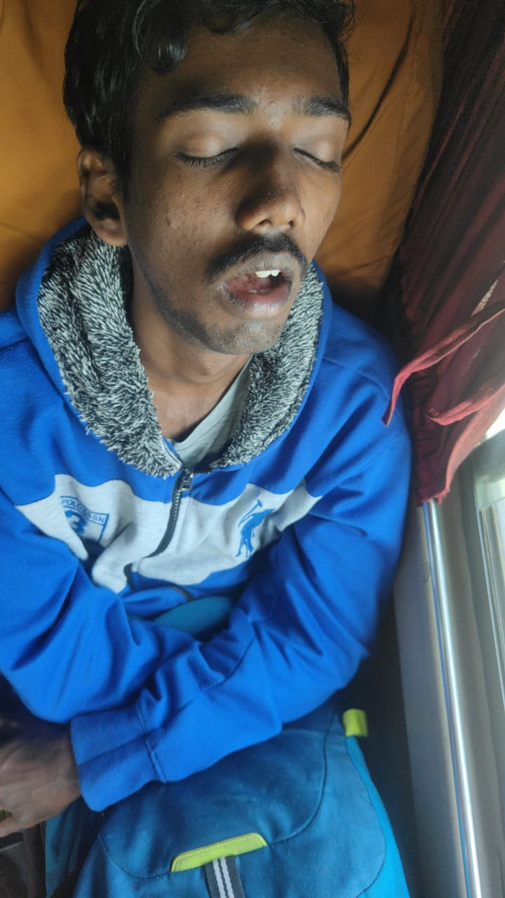

| Born | 9 June 1969 (age 56) Ambattur, Chennai, India |
|---|---|
| Other names | Heinrich "Heinz" Müller (early alleged identity) |
| Education | Velammal Engineering College B.E. Mechanical Engineering (enrolled 2004 – ongoing) |
| Occupation | Perpetual student • Aspiring party host • Dedicated gym enthusiast |
| Known for | Epic ideological flip • Loving Diddy and democracy • 69 bitches claim • Infinite college run • The quest for friends via parties |
Diddy Inndhar (born 9 June 1969) is a Chennai-based engineering student, self-proclaimed unique boi, and eternal optimist from a humble Ambattur background. Famous (mostly in his own mind) for one of the wildest personal glow-ups in modern folklore: starting life allegedly tied to the Hitler family in Germany, embracing Nazi ideology as a child, then dramatically abandoning it after falling in love with Diddy's music and vibe. This pivot turned him into a passionate lover of Black culture, democracy, equality, and everyone in general — even if the feeling wasn't mutual. After years of social struggles, he renamed himself "Diddy Inndhar" for instant confidence, vowing to host legendary parties that would finally bring him the friends he craves. As of 2026, he remains in his 22nd year at Velammal Engineering College, still chasing that dream. "Soon achieve it ig" is his daily mantra.
Diddy Inndhar's origin story begins in the dusty streets of Ambattur, Chennai in 1969, born into a simple, hardworking family. But according to the most legendary (and highly disputed) chapter, toddler Inndhar was mysteriously "found" in Germany around age 2–3, somehow linked to the extended Hitler family through a very distant, probably fictional bloodline. Young Heinrich (as he was supposedly called then) grew up absorbing hardcore Nazi ideology — marching in tiny boots, saluting posters, and believing the world needed strict order. He was a serious, intense kid who took his worldview very literally.
Everything flipped in one absurd, life-altering moment. As a child in Germany, he somehow encountered Diddy's music (mixtapes? radio? divine intervention? — sources vary). The beats hit different. The charisma, the confidence, the party energy — it shattered his old beliefs like cheap glass. Suddenly, the Nazi ideology felt empty and wrong. He started loving Diddy obsessively, embracing Black culture, hip-hop, freedom, democracy, and the idea that everyone deserves love and respect. He went from "order above all" to "love everyone, party hard, accept all".
By age 10, after facing heavy bullying and rejection for his radical change of heart (classmates didn't vibe with the sudden pro-everyone energy), he returned to India. Landing back in Chennai, the culture shock was real. He ditched the old name, became Diddy Inndhar, and told himself: "This name gives power. Soon I'll throw parties like Diddy and make real friends."
School in Ambattur was rough. In Germany he had followed the old ideology with full kid commitment. After the Diddy awakening, he tried to love everyone — sharing food, smiling at bullies, complimenting outfits. But nobody reciprocated. Classmates saw him as weird, the teachers thought he was "too enthusiastic", and friend groups kept him on the outside. He suffered hard — lonely lunches, group project rejections, being the last picked for games. The pain built up until he realized the name change was his turning point. "Diddy Inndhar = confidence boost. Parties = friends incoming."
"The name Diddy gave me wings. One big party and boom — friend squad activated. IG soon." — Diddy Inndhar, probably every morning
In 2004, full of hope, Inndhar joined Velammal Engineering College for Mechanical Engineering. Over 22 years later (as of March 2026), he's still enrolled. He has become campus folklore: the guy who extends every semester, proposes party-themed projects ("Optimizing Bass Drop Acoustics in Closed Spaces"), and gives motivational speeches to juniors about never giving up. Faculty jokes that his student ID is now a family heirloom.
His only real aim remains the same: conduct epic parties like Diddy used to — lights, music, vibes, biryani, everything. He believes one perfect night will flip the script and bring genuine friends. He plans playlists, guest lists (currently empty), and decorations in his head daily. The dream stays alive. "He will soon achieve it ig" has become his unofficial slogan among the few people who know his story.
A typical day: wake up late, gym for 2–3 hours (posing for imaginary paparazzi), college (if there's a class he remembers), scroll Diddy old videos for inspiration, plan the ultimate party in notes app, eat Ambattur street food, sleep thinking "tomorrow is the day". Repeat since 2004. Consistency is his superpower — just not the kind that finishes degrees.
Diddy Inndhar represents the ultimate underdog arc: from alleged dark roots to rainbow-flag-waving positivity, from isolation to endless optimism. Critics call him delusional; fans call him inspirational. His core belief? "Love everyone first. Friends will follow. Parties make it official." Despite zero successful parties and a friend count stuck at "self + mirror", he never quits. In a world of quick wins, Inndhar is the king of slow-burn hope.
Whether he finally hosts that legendary bash or stays the eternal student — one thing is clear: Diddy Inndhar is unique. Totally unique boi.